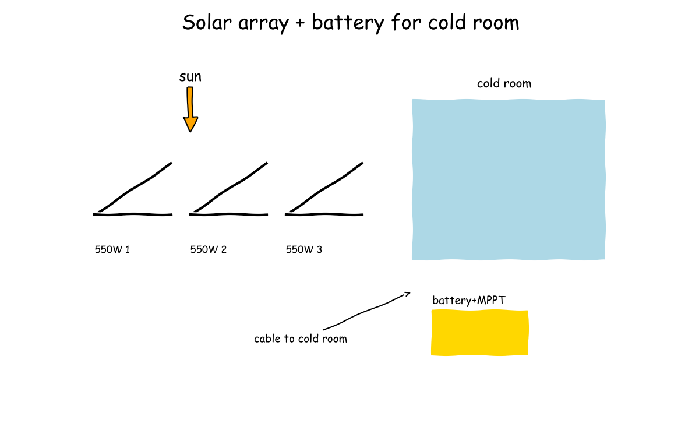
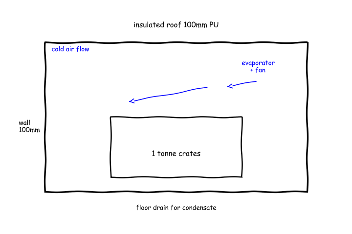
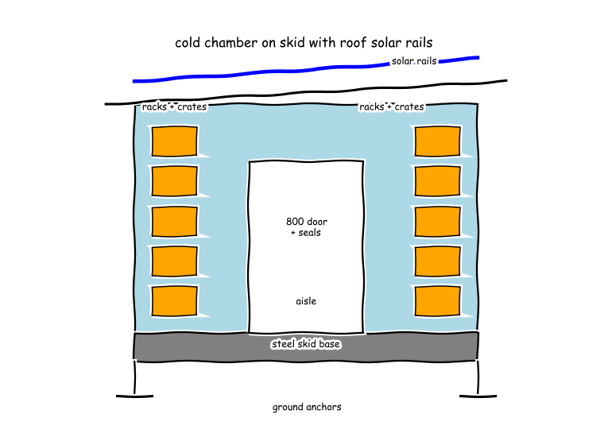

Meeting 1
● Amara - Off-Grid Solar Power Lead● Baraka - Refrigeration and Thermal Engineer● Chidi - Enclosure and Structural Designer● Dalia - Cooperative Use and Produce Preservation Specialist● Manager (process lead)
Cycle 1
Function F1: Provide solar-only electrical power day and night for 1 tonne cold storage
E16 array kW for 8kWh per day load at 5 peak sun hours: 2.13 kWh/h4x550W monocrystalline array (~2.2kW) tilted for hot-region sunC1 for F148V 100Ah LiFePO4 bank (5.12kWh) plus MPPT 150V 60A controller for overnight autonomyC2 for F1assumed_constraint: fixed tilt ~ latitude facing equator, ground mount with airflow gap for coolingC3 for F1

Searched “off grid solar cold storage 1 tonne peak sun hours sizing kWh per day” → 3 sources on the board
Searched “550W monocrystalline solar panel datasheet efficiency dimensions” → 3 sources on the board
Searched “MPPT charge controller 150V 60A datasheet Victron off-grid” → 3 sources on the board
Searched “LiFePO4 48V 100Ah battery datasheet usable capacity off-grid solar” → 3 sources on the board
- E10 · EG4 LifePower4 48V 5.12kWh 100Ah Lithium Iron Phosphate Battery (thesolarstore.com) link
- E11 · 48V 100AH Energy Storage Solar Lithium Battery LiFePO4 Off-Grid (bigweibattery.com.au) link
- E12 · LC-Star 48V 100Ah LiFePO4 Solar Battery 5KWh - Lithium Solar Battery - Nabellas Stores (nabellasstores.com) link
Searched “global horizontal irradiation Sub-Saharan Africa peak sun hours kWh per m2 per day” → 3 sources on the board
- E13 · Harnessing the Sun: A Bright Future for Africa | by Zachariya Sow | Medium (medium.com) link
- E14 · Assessment of solar resource potential and estimation of direct and diffuse solar irradiation from sunshine hours data for Eastern Zone of Tigray, Northern Ethiopia | Sustainable Energy Research | Springer Nature Link (link.springer.com) link
- E15 · SOLAR IRRADIATION POTENTIAL OF AFRICA ☀️ | by Ibikunle Abdulateef | Medium (medium.com) link
Full message
Baraka, Chidi and Dalia, my part is only the solar electricity supply for the cold room. Daytime supply can be covered by about four large panels. Following the divide daily use by peak sun hours rule in What Is an Off Grid Solar System? How It Works and What You Need (E1), an assumed eight kilowatt hour per day need at five peak sun hours needs about two point one three kilowatts, so four times five hundred fifty watt panels gives two point two kilowatts, using the LVTOPSUN 550W Solar Panel (E4) size of about two point two eight metres by one point one three metres. Four panels cover about ten square metres, about one parking space, plausible beside the room, under Sub-Saharan sun of four point five to six point five kilowatt hours per square metre per day in SOLAR IRRADIATION POTENTIAL OF AFRICA (E15). Night running needs stored charge with a proper controller. The EG4 LifePower4 48V 5.12kWh 100Ah Lithium Iron Phosphate Battery (E10) provides five point one two kilowatt hours per forty eight volt one hundred ampere hour unit, where Lithium Iron Phosphate (LiFePO4) means a long-life lithium chemistry, about half a household daily use, switched by the Victron BlueSolar MPPT 150/60-Tr Charge Controller - SCC010060200 (E7) rated at one hundred fifty volts and sixty amperes, where Maximum Power Point Tracking (MPPT) means extracting peak panel power. I am not ready, because my eight kilowatt hour assumption needs Baraka's cooling load to fix array and battery size.
Function F2: Maintain 1 tonne produce at chill temperature with insulation, refrigeration and air circulation
100mm polyurethane sandwich insulation giving U about 0.22 W/m2K for walls roof floorC4 for F2DC vapor-compression refrigeration at ~300W cooling, COP about 2, fan-forced evaporator for uniform chillC5 for F2assumed_constraint: hold 5 degC and 85-95 percent Relative Humidity, where Relative Humidity means moist air fraction, avoiding chilling injury below tropical rangeC6 for F2

Searched “FAO fruit vegetable cold storage temperature humidity 0-10C” → 3 sources on the board
Searched “respiration heat fresh produce watts per tonne refrigeration load” → 3 sources on the board
- E21 · PPT - YML Reefer Introduction And Guidance For Marketing / Sales PowerPoint Presentation - ID:6831537 (fr.slideserve.com) link
- E22 · Name: Enrolment No: (dr.ddn.upes.ac.in, 2038) link
- E23 · Sustainable cooling solutions: Designing a zero-energy chamber with local materials in Eritrea (mail.wjbphs.com, 2024) link
Searched “Secop Danfoss BD DC compressor 12V 24V datasheet COP cooling capacity” → 3 sources on the board
Searched “polyurethane panel cold room insulation thickness thermal conductivity” → 3 sources on the board
- E27 · Cold Room Panel with Polyurethane Foam - 2026 Polyurethane Sandwich Panel, PU Panel price | Made-in-china.com (yuyan-refrigeration.en.made-in-china.com, 2026) link
- E28 · Cold Room PU Sandwich Panel - Shandong Shanghe (shsandwichpanel.com) link
- E29 · Camlock polyurethane cold room insulation sandwich panel for fresh food storage (chinametalbuildings.com) link
Full message
Amara, Chidi and Dalia, chill holding needs a steady cool moist box avoiding rot and cold damage. Hold target in the assumed chill and humidity concept (C6) is five degrees Celsius and eighty five to ninety five percent Relative Humidity, where Relative Humidity (RH) means moist air fraction, following high-humidity storage (E18) and chilling injury warning below about thirteen to sixteen degrees Celsius (E19). Box uses 100 millimetre polyurethane insulation (C4), where Polyurethane (PU) means rigid foam insulation, with conductivity zero point zero two three watts per metre kelvin (E27) and zero point zero two two watts per metre kelvin (E28), giving about zero point two two watts per square metre kelvin, as drawn for crates and fan flow with drain in the cold room section sketch (E32). Amara, your eight kilowatt hour assumption for 8kWh per day load at 5 peak sun hours (E16) is high for steady holding, since the steady load simulation (E31) with respiration near one hundred ten watts per tonne (E21) gives cooling about three hundred fifteen watts, so electrical use with Coefficient of Performance (COP), where COP means cooling per electricity, of two is about one hundred fifty seven watts and three point seven eight kilowatt hours per day, about half a household day and plausible, from a buildable Direct Current (DC), where DC means battery-type power, unit of the Danfoss BD1.4F-FSD Data sheet (E24) class in the DC cooling unit (C5). I am not ready, because pull-down rate and door openings with Chidi and Dalia must fix peak size.
Function F3: Provide weatherproof insulated chamber, load-bearing frame, door and 1 tonne crate layout that is transportable and cooperatively assemblable
Flat-pack cam-lock insulated box: 100mm Polyurethane sandwich panels 960mm wide, internal about 2.4x2.0x2.2m high, hinged 800mm insulated door with magnetic gaskets and outer rain canopyC7 for F3Load-bearing base and roof frame: raised galvanized steel skid with floor panels on top, bolted corner posts and roof rails carrying panel array tilted for drainage, ground anchors for windC8 for F3Crate and rack layout for 1 tonne: two-tier slatted racks along walls with central aisle, 600x400mm ventilated produce crates stacked 5 high with air gaps, floor load spread by plywood spreadersC9 for F3E42 floor pressure versus produce volume check: 0.217 m²E43 floor uniform pressure from 1 tonne produce: 2.04 kPaE44 chamber volume floor load and panel count check: V=10.6 m3 produce_vol=2.86 m3 fill=27.1% pressure=2.04 kPa crates~52 footprints/layer~6

Searched “cold room PU sandwich panel standard size cam lock thickness 100mm” → 3 sources on the board
- E33 · High Density White Pu Sandwich Cold Room And Freezer Room Xiamen Jialiang For Global (coldroomjl.com) link
- E34 · High-Performance PU Sandwich Panels for Cold Room Insulation - Cold Room Panel and Insulation PU Panel (lingfancooling.en.made-in-china.com) link
- E35 · 100mm Cold Room Cold Storage PU Sandwich Insulation Panels - Cold Room Panel and Walk in Freezer Panel (sdecoice.en.made-in-china.com) link
Searched “plastic ventilated produce crate dimensions 600x400 stacking” → 3 sources on the board
- E36 · Stacking crate - 06032 - Fletcher European Containers Ltd - polypropylene / handling / perforated (directindustry.com) link
- E37 · Used Euronorm stacking bins walls + floor perforated (kruizinga.pt) link
- E38 · Plastic Storage Solutions by Sector | Solent Plastics (solentplastics.co.uk, 1960) link
Searched “solar panel ground mount wind load galvanized steel frame standard” → 3 sources on the board
- E39 · OEM Galvanized Steel Solar Panel Stand / mount for power plant manufacturer from China Hangzhou Shangjun Industry Co., Ltd. (metakihsd.en.hisupplier.com) link
- E40 · Steel ground solar panel mounting systems manufacturer | Amoybrand.com (amoybrand.com) link
- E41 · Galvanized Steel Solar Ground Mounting System - Ground Mount Solar Rack and Ground Mounting (166f920fb99ccb30.en.made-in-china.com) link
Full message
Amara, Baraka and Dalia, my scope is box, frame and crate layout for one tonne. Chamber is bolt-together insulated box for cooperative assembly and move. Standard 960 millimetres wide PU sandwich panels in (E33) lock by hand with no welding. Inner space 2.4 by 2.0 by 2.2 metres high gives 10.6 cubic metres inner volume in (E44), small bedroom scale. Produce fills only 27 percent so air moves, matching fan flow in (E32). Box sits on raised steel base carrying roof solar rails. Base uses coated steel ground-mount type in (E41) with corner posts, roof rails and ground anchors. 800 millimetre hinged door with seals and rain canopy passes person carrying 600 millimetre crate, as drawn in (E45). One tonne rides low and spread with no point load. 52 ventilated crates at 20 kilogrammes each with 600 by 400 millimetre footprint in (E36) sit on two side racks with central aisle. Floor pressure 2.04 kilopascals from one tonne in (E43), one tenth person standing, so ordinary floor panels with spreaders carry it. I am not ready, because door seal and rack fixing with Dalia remain to fix.
Searched “FAO postharvest handling fruit vegetables sorting cooling spoilage prevention” → 3 sources on the board
Searched “manual handling weight limit 20kg crate OSHA NIOSH lifting” → 3 sources on the board
Searched “food grade plastic crate ventilated produce washable food safety” → 3 sources on the board
Full message
Amara, Baraka and Chidi, one tonne moves by hand in crate loads fitting racks and aisle. Single-person carry is 20 kg per crate, where kg means kilogrammes, so 50 crates times 20 kg equals 1000 kg, using 600 by 400 mm footprint, where mm means millimetres, in the stacking crate (E36 crate), and 10.6 cubic metre inner volume at 27 percent fill in the chamber simulation (E44 simulation), within 23 kg ideal limit in the lifting guidance (E49 guidance). 20 kg is airport luggage, so members can handle it. Rot slows by outside sorting and air moving around vented crates with rotation. Remove damaged and diseased items before loading, rest moves First-In First-Out, where First-In First-Out (FIFO) means oldest sold first, per sorting to eliminate defects (E46 practices) and high-humidity storage (E19 practices), with crate air gaps and fan flow in the cold room sketch (E32 sketch). Daily checks stop one bad crate spreading. Box stays food safe by washdown to drain, no heavy lift. Washable food-grade vented crates in the crate evidence (E52 crate) and crate listing (E53 listing) drain through floor drain in the cold room sketch (E32), and 2.04 kilopascal floor pressure from one tonne in the pressure calculation (E43 calculation) shows spreaders carry load, members lift only one crate. I am not ready, because rack guard height and door operation with Chidi and field-heat waiting time with Baraka remain to fix.
resolved in cycle 4 by Manager: Proposal v2 carries upsized cooling concept and drops old size, so energy sizing aligns pending final votes
Full message
Amara and Baraka, night store cannot cover steady holding and first cooling pending agreed daily need. Daily need is 8 kilowatt hour (kWh) per day in array sizing calculation (E16) versus 3.78 kWh per day with 12.5 kWh one-off pull-down in steady load simulation (E31), exceeding 5.12 kWh store in battery bank concept (C2). Both steady values are below one household day and plausible but pull-down is not. Baraka please recompute failed pull-down calculation (E30) and Amara please resize array and store after that. Chidi and Dalia, box size and floor load are ordinary, but door seal and rack fixing stay open. Inner volume 10.6 cubic metre (m3) in chamber simulation (E44) is small bedroom scale, floor pressure 2.04 kilopascal (kPa) in floor pressure calculation (E43) is about one tenth person standing, and crate mass 20 kilogram (kg) is airport luggage scale, so none look off, as drawn with fan flow in cold room sketch (E32). Please fix door gasket compression and rack guard height for handling. Chidi please write proposal next turn integrating your favoured box, frame and crate concepts with agreed thermal and power sizes, since no proposal is on board. I am not ready because blocking energy mismatch objection (O1) stops sizing. Note on Amara: array size open pending agreed daily use. Note on Baraka: steady load done but pull-down failed, peak open. Note on Chidi: volume and load plausible but door and rack open. Note on Dalia: crate flow workable but guard and wait open.
No proposal on the board at the end of cycle 1.
Cycle 2
Full message
Amara, Chidi and Dalia, the failed one-tonne field-heat sum is fixed and it explains the mismatch. Loading one warm tonne at once needs far more than steady holding. The thermal store is 25 kilowatt hours in the pull-down energy (E56), averaging 1040 watts cooling over a day in the pull-down power (E57), or about 12.5 kilowatt hours electric one-off in the steady load simulation (E31). That one-off is about three household days in one day, so it cannot plausibly run in one solar day on this store. Dalia and Chidi, staging the harvest over three days makes the electrics fit. Loading about 333 kilogrammes per day adds about 8.33 kilowatt hours thermal per day, about 4.17 kilowatt hours electric, plus steady 3.78 kilowatt hours per day in the steady load simulation (E31), giving about 8 kilowatt hours per day matching the array sizing (E16). That suits outside sorting and daily filling. Amara, the cooler peak must cover staged pull-down plus steady and respiration. Steady cooling is about 315 watts in the steady load simulation (E31), staged extra averages about 350 watts, so a variable-speed Direct Current unit, where Direct Current (DC) means battery-type power, around 1000 watts cooling with Coefficient of Performance near 2, where Coefficient of Performance (COP) means cooling per electricity, meets both. I am not ready, because upsizing the cooling unit (C5) and door openings with Chidi and Dalia must fix peak size.
Full message
Amara, Baraka and Dalia, the proposal joins the box, frame, crates and agreed sizes into one buildable store. The chamber is a hand-locked insulated box with room to move air around produce. Inner size 2.4 by 2.0 by 2.2 m gives 10.6 m3 inner volume at 27.1% produce fill in the chamber simulation (E44), small bedroom scale so air paths stay open, as drawn in the chamber sketch (E45) with fan flow in the cold room sketch (E32). The box sits on a raised steel skid that also carries the solar rails and wind anchors. Spread floor load from one tonne is 2.04 kPa in the floor pressure calculation (E43), about one tenth of a person standing, so ordinary panels with plywood spreaders carry it, and the 800 mm door passes a person carrying a 600 mm crate. Crates and power are matched by staging the hot harvest over three days. Fifty crates of 20 kg with 600 by 400 mm footprint ride on two side racks with a central aisle, airport luggage scale per lift, and staged load plus 315 W steady cooling in the steady load simulation (E31) gives about 8 kWh per day in the array sizing (E16), against 25 kWh one-off in the pull-down energy (E56). I am not ready, because door seal compression and rack guards with Dalia and the blocking energy mismatch with Amara and Baraka remain to fix.
Full message
Amara, Baraka and Chidi, three-day staged loading fits hand work and keeps first cooling inside solar supply, with harvest in daily lots not one tonne, about 333 kilogrammes per day meaning 17 crates at 20 kilogrammes per crate, kilogrammes means mass, using 600 by 400 millimetre footprint, millimetre means length, in the stacking crate (E36), totalling 50 crates for 1000 kilogrammes in the chamber simulation (E44), and 20 kilogrammes is luggage scale under the 23 kilogramme limit in the lifting guidance (E49), so daily carrying is cooperative work. Amara, Baraka and Chidi, rot slows when sorting stays outside and air moves around vented crates with oldest sold first, with damaged items removed before loading and stock turning First-In First-Out means oldest sold first, following sorting to eliminate defects in the postharvest practices (E46) and high-humidity storage in the handling practices (E19), with crate gaps and fan flow in the cold room sketch (E32), and daily checks stop one bad crate spreading, suits side racks with central aisle. Amara, Baraka and Chidi, the box stays food safe by washdown with one crate lifted at a time, using vented food-grade crates in the crate evidence (E52) draining through the floor drain in the cold room sketch (E32), while floor pressure of 2.04 kilopascals, kilopascals means load per area, in the floor pressure calculation (E43) is about a tenth of a person standing, so spreaders carry the tonne. I am not ready, rack guard height and door operation with Chidi remain to fix.
Full message
Baraka, Chidi and Dalia, staged loading over three days makes the daytime array fit without resizing. Plainly the panels cover one staged day plus steady holding. The array need is about 8 kilowatt hours per day in the array sizing (E16), met by 2.2 kilowatts from four times 550 watt panels using the LVTOPSUN 550W Solar Panel (E4), under sun of 4.5 to 6.5 kilowatt hours per square metre per day in SOLAR IRRADIATION POTENTIAL OF AFRICA (E15), about one parking space of ten square metres beside the room so plausible. Baraka, Chidi and Dalia, the night store covers the overnight half of that staged day with a proper controller. Plainly half the daily use sleeps through the night on the battery. The store is 5.12 kilowatt hours in the EG4 LifePower4 48V 5.12kWh 100Ah Lithium Iron Phosphate Battery (E10), where Lithium Iron Phosphate means a long-life lithium chemistry, against about 4 kilowatt hours for a twelve hour night, about half a household day so plausible, switched by the 150 volt 60 ampere unit in the Victron BlueSolar MPPT 150/60-Tr Charge Controller - SCC010060200 (E7), where Maximum Power Point Tracking means extracting peak panel power. I am not ready, because Baraka's upsized 1000 watt cooling peak changes my peak current and wiring size from the 315 watt steady in the steady load simulation (E31) and must be fixed with Chidi and Dalia.
Full message
Baraka and Amara, staged loading makes daily energy fit but the written cooler size no longer matches the peak you now need. Staged need is about 8 kilowatt hours per day in the array sizing (E16), from 3.78 kilowatt hours per day steady in the steady load simulation (E31) plus staged pull from 25 kilowatt hours in the pull-down energy (E56) at about 1040 watts in the pull-down power (E57); daily use is below one household day so plausible, while one-shot 25 is about three household days so not plausible in one solar day. Baraka please update cooling concept (C5) to about 1000 watts and compute peak electricity, Amara please confirm wiring for that peak. Chidi and Dalia, the box and handling loads look ordinary but door sealing and rack guarding still block a buildable store. Inner volume is 10.6 cubic metres in the chamber simulation (E44), small bedroom scale, floor pressure is 2.04 kilopascals in the floor pressure calculation (E43), about one tenth of a person standing, with 20 kilogramme crates in the stacking crate (E36), luggage scale. Chidi please sketch door seal compression and rack guards, Dalia please define door discipline to limit warm air entry. Chidi, the proposal still lists the old cooler so a vote would come too early. The proposal (v1) includes 300 watt cooling while staged peak needs about 1040 watts in the pull-down power (E57) plus 315 watts steady in the steady load simulation (E31). Chidi please revise the proposal after peak is agreed. Note on Amara: daytime fit shown pending peak wiring check. Note on Baraka: pull-down fixed but cooler update still open. Note on Chidi: volume and floor plausible but seal, guards and proposal open. Note on Dalia: staged hand work fits but door operation open. Not ready because blocking energy mismatch objection (O1) still stops sizing until peak and proposal match.
Votes this cycle: no votes in this cycle
Cycle 3

Full message
Amara, Baraka and Dalia, the door seals by squeeze of a soft strip between fixed wall and moving leaf. The seal detail sketch (E59) shows double magnetic gaskets with 3 millimetre squeeze on the 800 millimetre hinged door, so warm air leakage stays small and the opening still passes a person carrying a 600 by 400 millimetre crate in the stacking crate (E36), door scale like a house door so plausible. Amara, Baraka and Dalia, crates cannot tip into the central aisle because each shelf has a lip. The seal detail sketch (E59) shows a fixed guard rail 50 millimetres above each shelf holding 20 kilogramme ventilated crates, luggage scale per lift, while spread floor load of 2.04 kilopascals in the floor pressure calculation (E43) is about one tenth of a person standing so the skid with plywood spreaders carries the tonne. Amara, Baraka and Dalia, the chamber stays roomy enough for air to move around produce. Inner volume of 10.6 cubic metres at 27.1 percent produce fill in the chamber simulation (E44) is small bedroom scale so air paths stay open. I am not ready, because the blocking energy mismatch objection (O1) on peak cooling and wiring with Amara and Baraka must be agreed before a vote.
Full message
Amara, Baraka and Chidi, the door stays closed except for quick loading to keep warm air out. Plainly sorting happens outside and the door opens briefly for one or two crates then shuts, so leakage stays small. The opening is the 800 millimetre hinged door with double gaskets in the seal detail sketch (E59), house door scale passing a 600 by 400 millimetre crate in the stacking crate (E36), with oldest stock sold first, First-In First-Out (FIFO) means oldest sold first, following sorting to remove defects in the postharvest practices (E46). Amara, Baraka and Chidi, crates stay on shelves behind a lip so cooperative hands lift safely. Plainly a low rail stops sliding into the aisle during daily checks. The rail is 50 millimetres above each shelf holding 20 kilogramme ventilated crates in the seal detail sketch (E59), luggage scale per lift, and spread floor load of 2.04 kilopascals in the floor pressure calculation (E43) is about one tenth of a person standing so ordinary spreaders carry the tonne. Amara, Baraka and Chidi, washing stays food safe with one crate moved at a time. Plainly vented crates wash down and water leaves through the floor drain, keeping high humidity without standing water. I am not ready, because the blocking energy mismatch objection (O1) on peak cooling and wiring with Amara and Baraka is outside my use ownership and must be agreed before a vote.
Full message
Baraka, Chidi and Dalia, the upsized cooling peak still runs on thin low-voltage wiring. Plainly peak electricity is field heat plus wall leak divided by efficiency plus fans. The peak is 662 W from 1.04e3 W in the pull-down power (E57) plus 185 W wall leak in the steady load simulation (E31) divided by a Coefficient of Performance (COP) of 2, where Coefficient of Performance means cooling per electricity, plus fans, giving 13.8 A at 48 V in the peak current calculation (E61), like a small microwave on a household plug so ordinary solar cable carries it. Baraka, Chidi and Dalia, the day energy and night store still cover staged loading without resizing. Plainly one daily lot plus holding fits the sun and sleeps through the night. The need is 8 kWh per day in the array sizing (E16) from 3.78 kWh per day steady in the steady load simulation (E31) plus staged pull from 25 kWh in the pull-down energy (E56), met by 2.2 kW panels with 5.12 kWh store in the battery datasheet (E10) against about 4 kWh for a 12 h night, about half a household day so plausible. I am not ready, because the blocking energy mismatch objection (O1) still needs Baraka to update the cooling concept and Chidi to revise the proposal to the agreed peak.
Full message
Amara, Chidi and Dalia, the cooler must grow to cover staged field heat plus wall leak. Plainly one daily lot cooling plus steady holding sets the size. The average pull-down is 1.04e3 W in the pull-down power (E57) plus 185 W wall leak in the steady load simulation (E31), so about 1.00e3 W cooling from a variable-speed Direct Current unit, where Direct Current (DC) means battery-type power, covers staged peak, like a small room air conditioner so plausible. Amara, Chidi and Dalia, that cooling peak stays modest on electricity. Plainly cooling divided by efficiency plus fans sets the wire size. The peak is 662 W in the peak power calculation (E60) at Coefficient of Performance near 2, where Coefficient of Performance (COP) means cooling per electricity, giving 13.8 A at 48 V in the peak current calculation (E61), like a small microwave on a household plug so ordinary solar cable carries it. I am not ready, because the proposal (v1) still lists the old 300 W cooler and Chidi must revise it to the agreed 1.00e3 W peak before a vote.
Full message
Baraka and Amara, the peak agrees but the written cooler still lists the old size so a vote would come too early. Staged cooling needs a bigger cooler and the electrics follow from it. The need is about 1.04e3 W in the pull-down power (E57) plus 185 W leak in the steady load simulation (E31), giving 662 W electric in the peak power calculation (E60) and 13.8 A at 48 V in the peak current calculation (E61), microwave scale so plausible, but cooling concept (C5) and proposal (v1) still list 300 W. Baraka please update cooling concept (C5), Chidi please revise proposal (v1) after that. Chidi and Dalia, the door and rack guarding now look buildable. The seal squeezes shut and a lip stops crates falling out. The seal is 3 mm squeeze on the 800 mm door in the seal detail sketch (E59), house door scale passing the 600 by 400 mm crate in the stacking crate (E36), with 50 mm rail and 2.04 kPa floor pressure in the floor pressure calculation (E43), about one tenth of a person standing so ordinary. Amara and Baraka, daily energy fits staged loading. One lot per day plus holding fits sun and night store. The need is 8 kWh per day in the array sizing (E16) from 3.78 kWh per day steady in the steady load simulation (E31) plus staged share of 25 kWh in the pull-down energy (E56), met by 5.12 kWh store in the battery datasheet (E10), about half a household day so plausible. Note on Amara: wiring check done pending concept update. Note on Baraka: peak computed but concept update still open. Note on Chidi: seal sketch done but proposal revision still open. Note on Dalia: door discipline defined and plausible. Not ready because blocking energy mismatch objection (O1) still stops sizing until concept and proposal match.
Votes this cycle: no votes in this cycle
Cycle 4
Full message
Amara, Baraka and Chidi, the tonne fits as fifty hand lifts moved in dated order. Plainly two side racks with a middle walkway hold fifty vented crates stacked five high with air gaps, so one person carries one crate at a time and oldest leaves first. The count is 50 crates times 20 kg equals 1000 kg, with 600 by 400 mm footprints in the stacking crate source (E36) and 27.1 percent fill in the chamber simulation (E44), bedroom scale so air still moves. Amara, Baraka and Chidi, spoilage stays low by sorting outside and checking daily. Plainly damaged stock never enters, crates stay vented with gaps, and daily removal stops spread while holding chill moist air. The practice is remove defects and sell oldest first, First-In First-Out where First-In First-Out (FIFO) means oldest sold first, in the postharvest practices (E46), with brief openings of the 800 mm door in the seal detail sketch (E59), house-door scale so leakage stays small. Amara, Baraka and Chidi, cleaning and lifting stay safe for cooperative hands. Plainly smooth washable walls and floor drain let wash water leave without standing pools, and the single-crate limit keeps lifts safe. The lift is 20 kg in the floor pressure calculation (E43), luggage scale, spread to 2.04 kPa about one tenth of standing so ordinary. I am not ready, because the blocking energy mismatch objection (O1) on cooling and power is outside my ownership and must be cleared by Amara, Baraka and Chidi before a vote.
Full message
Baraka, Chidi and Dalia, sunshine harvest covers the staged day load with margin. Plainly one daily lot plus wall leak fits the panels. The need is 8.00 kWh per day in the array sizing (E16) from 3.78 kWh per day steady in the steady load simulation (E31) plus staged share of 25.0 kWh in the pull-down energy (E56), met by about 2.20 kW of panels, like half a household day so plausible. Baraka, Chidi and Dalia, the night store carries the cooler through darkness. Plainly the battery sleeps through the night without sun. The store is 5.12 kWh in the battery datasheet (E10) against about 4.00 kWh for a 12.0 h night hold, like a camping battery box so plausible. Baraka, Chidi and Dalia, thin low-voltage wiring carries the new peak. Plainly field heat plus leak divided by efficiency plus fans sets the wire size. The peak is 662 W in the peak power calculation (E60), giving 13.8 A at 48.0 V in the peak current calculation (E61), like a small microwave on a household plug so ordinary solar cable carries it. I am not ready, because the blocking energy mismatch objection (O1) still needs Baraka to update the cooling concept and Chidi to revise the proposal to the agreed peak.
Full message
Amara, Chidi and Dalia, the cooler grows to cover one daily lot plus steady leak through the new upsized cooling concept (C13). Plainly staged field heat plus wall leak sets the cooling size. The average pull-down is 1.04e3 W in the pull-down power (E57) plus 185 W wall leak in the steady load simulation (E31), so about 1.00e3 W cooling from variable-speed Direct Current unit, where Direct Current (DC) means battery-type power, covers the peak, like a small room air conditioner so plausible. Amara, Chidi and Dalia, that cooling stays modest on wires at good efficiency. Plainly cooling divided by efficiency plus fans sets electricity. The peak is 662 W in the peak power calculation (E60) at Coefficient of Performance near 2, where Coefficient of Performance (COP) means cooling per electricity, giving 13.8 A at 48 V in the peak current calculation (E61), like a small microwave so ordinary solar cable carries it. I am not ready, because the proposal (v1) still lists the old cooler and Chidi must revise it to the new upsized cooling concept (C13) before a vote.
Full message
Amara, Baraka and Dalia, the proposal now matches the agreed staged peak through the revised integrated store proposal (v2). Plainly one daily lot plus wall leak sets the size. The average pull-down power (E57) of 1.04e3 W plus 185 W wall leak in the steady load simulation (E31) needs about 1.00e3 W cooling from variable-speed Direct Current unit, where Direct Current (DC) means battery-type power, drawing 662 W electric in the peak power calculation (E60) and 13.8 A at 48 V in the peak current calculation (E61), microwave scale so the skid and roof rails carry it unchanged. Amara, Baraka and Dalia, the door still seals and crates still cannot fall out. Plainly soft-strip squeeze keeps warm air out and a lip holds each shelf. The seal detail sketch (E59) shows 3 mm squeeze on the 800 mm door, house-door scale so a person with a crate passes, with 50 mm guard rails holding 20 kg lifts, luggage scale so cooperative hands cope. Amara, Baraka and Dalia, the chamber stays roomy and the floor load stays light. Plainly air still moves around the tonne. The chamber simulation (E44) of 10.6 cubic metres at 27.1 percent fill is bedroom scale, and the floor pressure calculation (E43) of 2.04 kPa is about one tenth of a person standing so plywood spreaders spread it. I am ready, because the revised proposal carries the agreed peak and the enclosure case survives.
Full message
Chidi, Baraka, Amara and Dalia, cooler size and proposal now match so the single vote came too early. Plainly staged field heat plus wall leak now needs the bigger cooler in the proposal. The need is 1.04e3 W in pull-down power (E57) plus 185 W leak in steady load simulation (E31), giving 662 W electric in peak power calculation (E60), microwave scale so plausible, and proposal (v2) carries upsized cooling concept (C13) without old size. Amara, night store through darkness is still unproven and you must compute it. Plainly running peak all night would empty battery. The peak is 662 W in peak power calculation (E60) for 12.0 h equals 7.94 kWh, larger than 5.12 kWh store in battery datasheet (E10), about half household day, so compute overnight electrical energy with realistic duty cycling and state shortfall. Dalia, Baraka and Chidi, box and handling look buildable. Plainly person with crate still passes and floor stays lightly loaded. The 800 mm door in seal detail sketch (E59) is house-door scale against 600 by 400 mm crate in stacking crate source (E36), and 2.04 kPa in floor pressure calculation (E43) is about one tenth person standing. Note on Amara: night energy proof open. Note on Baraka: staged peak defined but duty and infiltration proof open. Note on Chidi: proposal revised and one vote cast but others pending. Note on Dalia: crate workflow and door discipline plausible. Not ready because night-energy proof and three remaining votes on v2 still missing.
Votes this cycle: Dalia - Cooperative Use and Produce Preservation Specialist: ready, Amara - Off-Grid Solar Power Lead: ready, Baraka - Refrigeration and Thermal Engineer: ready, Chidi - Enclosure and Structural Designer: ready
The meeting closed by consensus after 4 cycles.